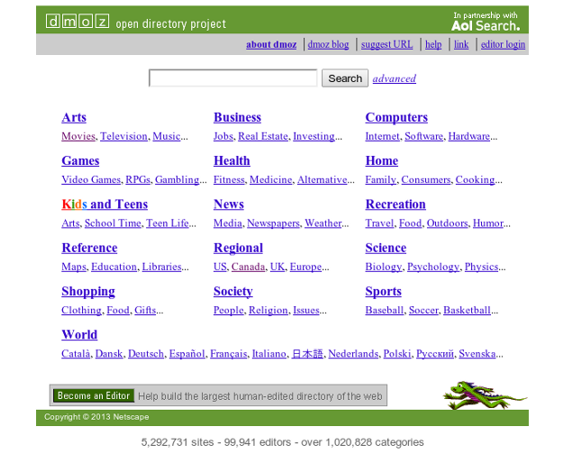

Inferring Hierarchical Descriptions
E. Glover, D. M. Pennock, S. Lawrence, R. Krovetz
Identifier l'ontologie de termes sur le web
Dans chacun des cas, pas de distinction entre "concept parent" et "concept enfant"
On compare la fréquence d'un terme t dans le document d et dans la collection C
Documents provenant de Open Directory (www.dmoz.org)
Extended Anchortext (EA) fait référence au texte qui apparaît autour des hyperliens.
Au lieu d'utiliser les textes complets, on va maintenant passer par des documents virtuels composés de ces EA.
Chaque document de la collection sera classé
| Feature | Ensemble positif | Ensemble négatif |
| Parent | $NA$ | $\leq 0.08$ |
| Self | $\geq 0.4$ | $\leq 0.06$ |
| Children | $\leq 0.4$ | $\leq 0.02$ |
| Catégorie | Parents | Selfs | Children |
| agriculture | management, science | agriculture, agricultural | soil, sustainable, crop |
| anomalies and alternative science | articles, science | alternative, ufo, scientific | |
| artificial intelligence | systems, computer | artificial, intelligence | ai, computational, artificial intelligence |